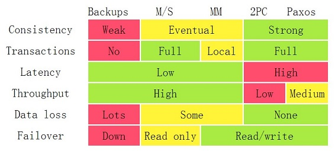

数据库容灾体系的演变
什么是容灾

备份的分类
| 备份方式 | 说明 |
|---|---|
| 逻辑备份 | 数据库对象级备份，备份内容是表、索引、存储过程等数据库对象，如MySQL mysqldump、Oracle exp/imp。 |
| 物理备份 | 数据库文件级备份，备份内容是操作系统上数据库文件，如MySQL XtraBackup、Oracle RMAN。 |
| 快照备份 | 基于快照技术获取指定数据集合的一个完全可用拷贝，随后可以选择仅在本机上维护快照，或者对快照进行数据跨机备份，如文件系统Veritas File System，卷管理器Linux LVM，存储子系统NetApp NAS。 |
规划
要结合业务，产生多维立体的解决方案。
All articles on this blog are licensed under CC BY-NC-SA 4.0 unless otherwise stated.
Related Articles

2017-11-15
MariaDB 调优相关
本文主要摘译自这里。 MySQL 曾经有独立的公司。但那间公司后来被 Sun 微系统公司获取了。 Sun 微系统公司又被 Oracle 获取了。原 MySQL 开发者担心 MySQL 成为闭源软件，因此成立了一家SkySQL 公司维护开源的 MySQL 分支–MariaDB。 MariaDB 支持的存储引擎包括： InnoDB/XtraDB 后者是前者的加强版，属于事务性存储引擎，也叫 ACID-compliant（ACID 遵从的）。XtraDB 是 Percona 开发的存储引擎，整体向下兼容。使用普通的 mysqldump 会耗尽 cpu（因为要把数据库转化成正经的 SQL 语句）。而 xtrabackup 在大库上的备份、还原、冗余都表现得更好（因为像 Oracle 一样是二进制备份吗？）。 TokuDB。另一个事务性存储引擎。以高压缩率著称（最高25倍压缩）。适合小空间存储大数据。 MyISAM。MySQL 上最古老的存储引擎。非事务性存储引擎，只支持表级锁，不支持 MVCC。 SphinxSE。非事务性存储引擎。这名字和古希腊猜谜语的怪兽，斯芬克斯一样。本以上是用...

2018-05-29
JPA 的 id 生成策略
JPA 有一个@GeneratedValue注解，有一个strategy attribute，如 @GeneratedValue(strategy = GenerationType.IDENTITY)。 常见的可选策略主要有IDENTITY和SEQUENCE。 GenerationType.IDENTITY 要求底层有一个 integer 或者 bigint 类型的自增列（ auto-incremented column)。自增列的赋值必须在插入操作之后发生，因为这个原因，Hibernate 无法进行各种优化（特别是 JDBC 的 batch 处理，一次 flush 操作会产生很多条insert 语句，分别执行）。如果事务回滚，自增列的值就会被丢弃。数据库在这个自增操作上有个高度优化的轻量级锁机制，性能非常棒。 MySQL 支持这种 id 生成策略， 使用 MySQL 应该尽量使用这个策略，即使它无法优化。 JPA 用它生成 id，会一条一条地插入新的 entity。 GenerationType.SEQUENCE 数据库有一个所谓的 sequence 对象，可以通过 selec...

2018-06-06
log 的历史
Log：一种被低估的计算机科学基础抽象 在计算机科学中，log（日志）远不止是"打印调试信息"那么简单。从数据库的 WAL 到分布式系统的共识协议，从版本控制系统到区块链，log 作为一种 append-only 的有序记录序列，是贯穿整个计算机科学发展史的核心抽象之一。 LinkedIn 的前首席工程师 Jay Kreps 在其著名文章 “The Log: What every software engineer should know about real-time data’s unifying abstraction” 中指出：log 是一种比消息队列、数据库、文件系统更基础的抽象——后者都可以建立在 log 之上。 本文尝试梳理 log 这一抽象在不同技术领域中的演化脉络。 数据库中的 Log：WAL 与 Binlog WAL（Write-Ahead Logging） WAL 是数据库实现 ACID 特性的基石。其核心思想是：在修改数据页之前，先将修改操作写入日志。 WAL 的工作流程： 事务开始时，将修改操作（redo log entry）追加写...

2020-09-14
MySQL 的配置
123456789101112131415161718-- 查看自动提交SELECT @@autocommit-- 查看全局隔离级别和会话隔离级别SELECT @@global.tx_isolation, @@tx_isolation;-- 查看引擎的事务状态，这里可以看出死锁日志，但需要 PROCESS privilege(s)show engine innodb status# 查看表详情show table status like 'dept_emp'# 查看当前存储引擎默认的行格式SHOW VARIABLES LIKE '%innodb_default_row_format%'# 查看全部 binlog 文件show binary logs;# 查看最新的binlog，带有 positionshow master status; # 查看某个 binlog 的内容show binlog events in 'binlog.000156';

2021-03-01
HATP 问题
问题定义 AP 的出现 在互联网浪潮出现之前，企业的数据量普遍不大。通常一个单机的数据库就可以保存核心的业务数据。那时候的存储并不需要复杂的架构，所有的线上请求(OLTP, Online Transactional Processing) 和后台分析 (OLAP, Online Analytical Processing) 都跑在同一个数据库实例上。后来业务越来越复杂，数据量越来越大，产生了一个显著问题：单机数据库支持线上的 TP 请求已经非常吃力，没办法再跑比较重的 AP 分析型任务，在这样的大背景下，于是AP开始从TP系统分离，某种程度上，AP是TP的一个分支。 这等于是在存储层做 CQRS 架构设计-另一种方案是在应用层也设计读写分离的架构。 AP 的玩法 在这样的背景下，以 Hadoop 为代表的大数据技术开始蓬勃发展，它用许多相对廉价的 x86 机器构建了一个数据分析平台，用并行的能力破解大数据集的计算问题。 AP 系统的典型技术栈演进： 阶段 代表技术 特点 第一代 Hadoop MapReduce + Hive 批处理，延迟高（分钟到小时级） 第二...

2021-03-10
秒杀通用解决方案
秒杀的实质 秒杀的实质，是围绕库存管理展开的并发读写 如果架构设计里面包含商品系统，包含库存，秒杀就要解决库存热点行高并发读写问题。 秒杀的底线是：不能超卖。qty库存 ≥ qty卖出 && qty库存 - qty卖出 ≈ 0。 秒杀能够容忍的一些思路：渐进趋于一致，允许漏卖。 秒杀架构的特性 高性能：秒杀架构要承载的访问流量比平时高出许多倍，涉及大量的并发读和并发写，因此支持高并发访问非常关键。 一致性：秒杀活动中有限数量的商品在同一时刻被很多倍的请求同时扣减库存，在大并发更新的过程中要保证数据准确，不能发生超卖的问题（超卖，本来应该卖完下架的商品，在前台展示依然有库存，依然不停的被卖出），即库存是多少，理应卖出多少（qty库存 ≥ qty卖出 && qty库存 - qty卖出 ≈ 0）。 高可用：秒杀架构虽经多次打磨优化，但现实中总难免出现一些考虑不到的情况，要保证系统的高可用，还要设计一个兜底预案，以便在最坏的情况发生时仍能从容应对。 秒杀技术难点 在有限的资源下，秒杀链路承载合理的最大流量。 大并发下扣减库存准确，“一致性...